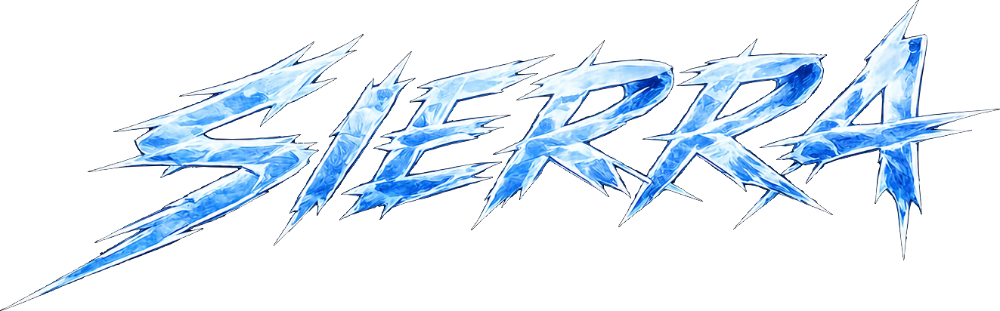
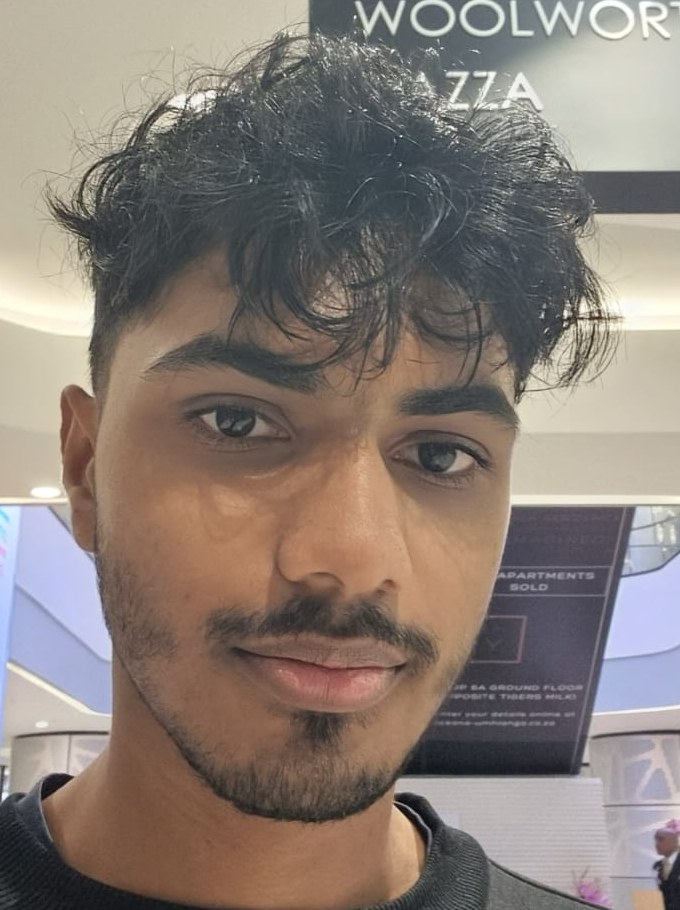

A creative, playful and unconventional game studio.
We make unique gameplay experiences that embrace humour, creativity and innovation. Dig up a seabed, drive a minibus taxi, fight off rats, outrun a gun-toting car.
Play what we've made
Every game has its own page with the brief, synopsis, core gameplay, features, systems and a download link. More are on the way.
Playful on purpose
Sierra is an independent game studio founded by Sooriyan Gramani. We position ourselves as creative, playful and unconventional, and we're known for gameplay experiences that don't feel like anyone else's.
We take real places and real problems, such as South African minibus taxis, kitchen hygiene and sustainable energy, and turn them into games that are fun first. We like game jams, tight scopes and finishing things, then putting them on itch.io for anyone to play.
Jams, deadlines and a classroom
Short deadlines are where we learn fastest. Every jam entry below is finished and playable.

Sooriyan Gramani
I'm a third-year Game Design student at Emeris Umhlanga (Vega School Durban). I specialise in programming with C# in Unity and in 3D modelling in Blender.
I take part in game jams often and build side projects for my itch.io page to sharpen both the technical and creative sides of my work. I enjoy exploring new possibilities, and I tutored game development at Emeris in 2025. I program every Sierra game and design most of them.
Let's build something unconventional
Recruiters, studios and collaborators: get in touch, or just go and play the games.